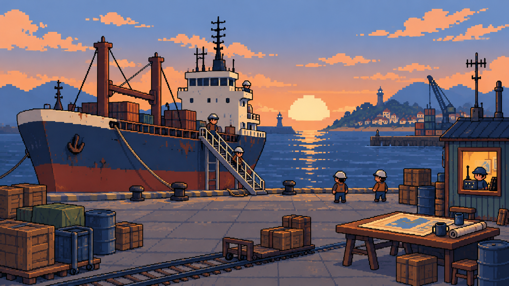
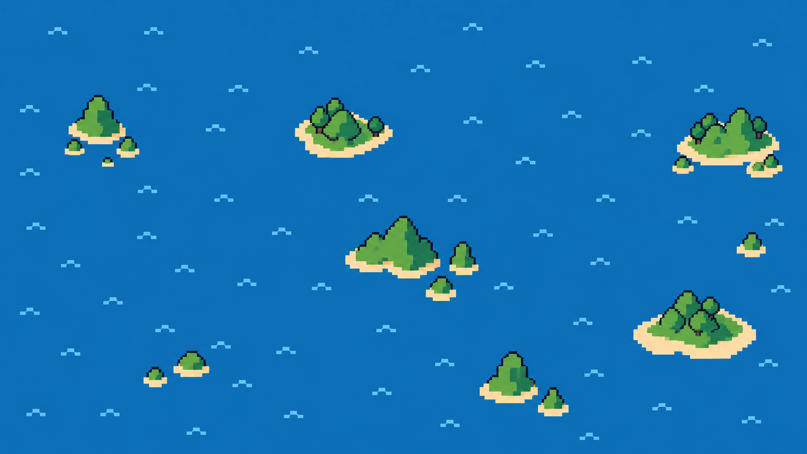

一生、一艘船、一张会记住你的海图
远洋货轮日志
从甲板新人到船长，再到一支船队的创建者ABC STUDIO · 2026
未登船甲板新人
航海日1
资金¥2,400
船况86%
燃油90%
船员稳定

船员名册
关系不是一条好感度。有人喜欢你，却不愿把命交给你的判断。
航海日志
官方记录会被公司与调查员阅读；私人页保存你不愿公开的事实。

一生、一艘船、一张会记住你的海图

关系不是一条好感度。有人喜欢你，却不愿把命交给你的判断。
官方记录会被公司与调查员阅读；私人页保存你不愿公开的事实。